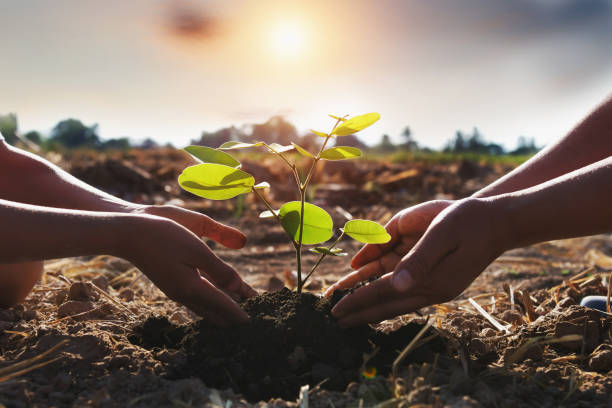

What Can We Do TO Save Trees?
If you’re a fan of nature and the environment, you’re probably already doing things to take care of the planet – on Earth Day and every day. This month, I’ve shared ways kids (and families) can help protect wildlife and oceans. Today I’m focusing on ways kids can help save trees.
Use paper wisely.
We can save trees from being cut down by using less paper
Play and create with trash.
The Explorers love playing with cardboard boxes, empty toilet paper and paper towel rolls – even shoeboxes.

Plant a tree.
Although planting trees is a popular Earth Day activity, fall is the season to plant trees and shrubs. Do your homework to make sure you pick the right tree for your space.